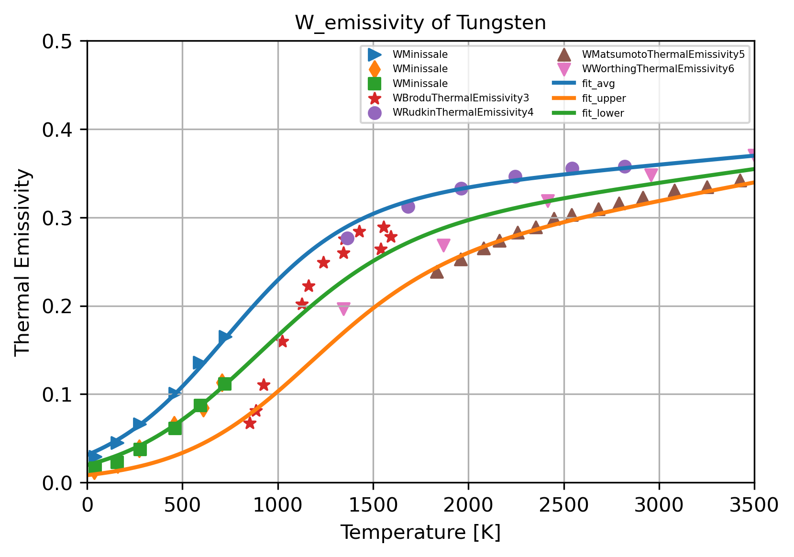

3 Thermophysical Properties#
import numpy as np
from models_2_0 import *
from plots_2_0 import *
from IPython.display import Markdown, display
# Excel spreadsheet and material name strings
excel_filename = 'Tungsten_data.xlsx'
material_name = "Tungsten"
RT = 273
f_size = 10
legend_size = 6
m_size = 35
3.1 Density#
def W_rho(T):
if 0 <= T <= 3695:
rho = 19.25 - 2.66207e-4 * (T - 298) - 3.0595e-9 * (T - 298)**2 - 9.5185e-12 * (T - 298)**3
elif 3695 < T <= 6000:
rho = 16.267 - 7.679e-4 * (T - 3695) - 8.091e-8 * (T - 3695)**2
else:
raise ValueError("Temperature is out of the expected range (0K to 6000K)")
return rho * 1e3
T = np.arange(300, 6001, 20)
rho = np.array([W_rho(t) for t in T])
title='W Density'
xlabel='Temperature [K]'
ylabel='Density [Kg/m^3]'
xlim_range=[0, 6000]
ylim_range=[0, 25e3]
plt.figure(figsize=(6, 4), dpi=300)
generic_plot(x_data=T, y_data=rho, shift=0, title=title, xlabel=xlabel, ylabel=ylabel, xlim_range=xlim_range, ylim_range=ylim_range, label=None, fsize1=12, fsize2=fsize2, fsize3 = 8)
3.2 Coefficient of Thermal Expansion#
material_property = "W_CTE"
var_names, variables, dataframe = load_data(excel_filename, material_property, header_rows_list=[1, 3], num_data_rows=7)
x_label='Temperature [C]'
y_label=r'CTE [$10^{-6}$/K]'
x_lim=[400,2000]
y_lim=[0, 6]
data_labels = [var.split('_')[0] for var in var_names[1::2]]
display(Markdown("""
**Data Source:**
- [Schmnidt1963--THE ENGINEERING PROPERTIES OF TUNGSTEN AND TUNGSTEN ALLOYS.pdf](https://drive.google.com/file/d/1zVKWktn90TJ5NX6dQBbdpRMyT2ylgfMw/view?usp=drive_link)
"""))
# Concatenate and sort data for fitting
vars_x = (np.array(variables[::2])-32)/1.8
vars_y = variables[1::2]
# Fit the data
p = [1, 1, 1]
T = np.linspace(300,2000,100)
fit_result = get_model_fit_and_print_it(vars_x, vars_y, fit_func='poly', param_initials=p, method='leastsq',\
material_name=material_name, property_name=material_property, eq_digits=3, print_bool=True)
plot_data(vars_x, vars_y, T, fit_result, f_size, m_size,\
x_label, y_label, x_lim, y_lim, data_labels,\
title=material_property + " of " + material_name, legend_loc = 'best', legend_font_size=5)
CTE_coef = [fit_result.params[key].value for key in fit_result.params]
def CTE(T):
return sum(CTE_coef[i] * T**i for i in range(len(CTE_coef)))
| EUROFER97TempF | EUROFER97CoefficientofThermalExpansion | |
|---|---|---|
| 0 | 799.640820 | 2.423116 |
| 1 | 2195.319239 | 2.760268 |
| 2 | 3619.283612 | 4.164268 |
Data Source:
C:\Users\indro\miniconda3\envs\jb\Lib\site-packages\lmfit\model.py:1730: RuntimeWarning: invalid value encountered in divide
fjac[key][i] = (np.atleast_1d(res1[key]).view('float64').ravel()
Fitting parameters for Tungsten W_CTE
[[Model]]
Model(polynomial)
[[Fit Statistics]]
# fitting method = leastsq
# function evals = 13
# data points = 3
# variables = 3
chi-square = 3.000e-250
reduced chi-square = 0.00000000
Akaike info crit = -1720.93882
Bayesian info crit = -1723.64298
## Warning: uncertainties could not be estimated:
[[Variables]]
c0: 2.67610567 +/- 0.00000000 (0.00%) (init = 1)
c1: -9.5802e-04 +/- 0.00000000 (0.00%) (init = 1)
c2: 8.5539e-07 +/- 0.00000000 (0.00%) (init = 2)
The equations for Tungsten W_CTE are:
Fit:
Minimum of confidence interval:
Maximum of confidence interval:
3.3 Specific Heat#
material_property = "W_specific_heat"
var_names, variables, df = load_data(excel_filename, material_property, header_rows_list=[1, 3], num_data_rows=23)
x_label = 'Temperature [K]'
y_label = r'Cp [J $Kg^{-1} K^{-1}$]'
x_lim = [1200, 2400]
y_lim = [0, 200]
data_labels = [var.split('_')[0] for var in var_names[1::2]]
display(Markdown("""
**Data Source:**
- [Lowenthal1962--The specific heat of metals between 1200 K and 2400 K.](https://drive.google.com/file/d/1Lht4yt4lj6nqYwLpXq2Aohu_0Uwa07xr/view?usp=drive_link)
"""))
# Concatenate and sort data for fitting
vars_x = variables[::2]
vars_y = variables[1::2]
T_data, Y_data = concatenate_and_sort(vars_x, vars_y)
x_data_list = [x for x in vars_x]
y_data_list = [vars_y[0]*22.76]
# Fit the data
p = [1, 1, 1, 1]
T = np.linspace(1200,2400,1200)
fit_result = get_model_fit_and_print_it(T_data, Y_data*22.76, fit_func='poly', param_initials=p, method='leastsq',\
material_name=material_name, property_name=material_property, eq_digits=3, print_bool=True)
plot_data(x_data_list, y_data_list, T, fit_result, f_size, m_size,\
x_label, y_label, x_lim, y_lim, data_labels,\
title=material_property + " of " + material_name, legend_loc = 'best', legend_font_size=5)
cp_coef = [fit_result.params[key].value for key in fit_result.params]
def SpecificHeat(T):
return sum(cp_coef[i] * T**i for i in range(len(cp_coef)))
| WTempK | WCp | |
|---|---|---|
| 0 | 1260.862944 | 6.774831 |
| 1 | 1350.518020 | 6.849642 |
| 2 | 1432.294615 | 6.914544 |
| 3 | 1500.257352 | 6.989002 |
| 4 | 1600.753775 | 7.068879 |
| 5 | 1623.412843 | 7.088809 |
| 6 | 1680.539054 | 7.153310 |
| 7 | 1714.034647 | 7.183195 |
| 8 | 1782.021492 | 7.233203 |
| 9 | 1810.548436 | 7.302128 |
| 10 | 1874.620149 | 7.322732 |
| 11 | 1910.049200 | 7.391769 |
| 12 | 1926.878964 | 7.323584 |
| 13 | 1956.391923 | 7.392525 |
| 14 | 1999.718741 | 7.451911 |
| 15 | 2035.147792 | 7.520948 |
| 16 | 2072.553695 | 7.585127 |
| 17 | 2153.276773 | 7.718472 |
| 18 | 2224.154162 | 7.836987 |
| 19 | 2288.134265 | 7.950499 |
| 20 | 2357.001051 | 8.108101 |
| 21 | 2400.289295 | 8.206606 |
Data Source:
Fitting parameters for Tungsten W_specific_heat
[[Model]]
Model(polynomial)
[[Fit Statistics]]
# fitting method = leastsq
# function evals = 16
# data points = 22
# variables = 4
chi-square = 4.47791939
reduced chi-square = 0.24877330
Akaike info crit = -27.0214466
Bayesian info crit = -22.6572768
R-squared = 0.99734226
[[Variables]]
c0: 59.5446165 +/- 20.1649719 (33.87%) (init = 1)
c1: 0.15498333 +/- 0.03406524 (21.98%) (init = 1)
c2: -8.6809e-05 +/- 1.8817e-05 (21.68%) (init = 1)
c3: 1.8477e-08 +/- 3.4028e-09 (18.42%) (init = 3)
[[Correlations]] (unreported correlations are < 0.100)
C(c2, c3) = -0.9986
C(c1, c2) = -0.9984
C(c0, c1) = -0.9982
C(c1, c3) = +0.9941
C(c0, c2) = +0.9933
C(c0, c3) = -0.9859
The equations for Tungsten W_specific_heat are:
Fit:
Minimum of confidence interval:
Maximum of confidence interval:
3.4 Thermal Conductivity#
def W_k(T):
if 300 <= T <= 3695:
k = 149.441 - 45.466e-3 * T + 13.193e-6 * T**2 - 1.484e-9 * T**3 + 3.866e6 / (T**2)
elif 3695 < T <= 6000:
k = 66.6212 + 0.02086 * (T - 3695) - 3.7585e-6 * (T - 3695)**2
else:
raise ValueError("Temperature is out of the expected range (300K to 6000K)")
return k
T = np.arange(300, 6001, 5)
k = np.array([W_k(int(t)) for t in T])
title='Thermal Conductivity of pure W'
xlabel='Temperature [K]'
ylabel='Thermal Conductivity [W/m.K]'
xlim_range=[0, 6000]
ylim_range=[0, 180]
plt.figure(figsize=(6, 4), dpi=300)
generic_plot(x_data=T, y_data=k, shift=0, title=title, xlabel=xlabel, ylabel=ylabel, xlim_range=xlim_range, ylim_range=ylim_range, label=None, fsize1=12, fsize2=fsize2, fsize3 = 8)
display(Markdown("""
**Data Source:**
- [Tolias2017--thermophysical properties of solid and liquid tungsten relevant.pdf](https://drive.google.com/file/d/1yjf497SdhnkfiJqxQwKkY1LkHd0omkAP/view?usp=drive_link)
"""))
material_property = "W_conductivity"
var_names, variables, datafream = load_data(excel_filename, material_property, header_rows_list=[1, 3], num_data_rows=15)
x_label='Temperature [C]'
y_label=r'Thermal Conductivity [W/m.K]'
x_lim=[0, 1100]
y_lim=[0, 200]
data_labels = [var.split('_')[0] for var in var_names[1::2]]
display(Markdown("""
**Data Source:**
- [Nogami2021-- Mechanical properties of tungsten-Recent research on modified tungsten materials in Japan](https://drive.google.com/file/d/1zauZKW21QloQ4LA3BcDXD8PHHT6UuJVX/view?usp=drive_link)
"""))
# Concatenate and sort data for fitting
vars_x = variables[::2]
vars_y = variables[1::2]
T_data, Y_data = concatenate_and_sort(vars_x, vars_y)
x_data_list = [x for x in vars_x]
y_data_list = vars_y
# Fit the data
p = [1, 1, 1, 1]
T = np.linspace(0,1100,1100)
fit_result0 = get_model_fit_and_print_it(np.array(vars_x)[[0,1,5]].flatten(), np.array(vars_y)[[0,1,5]].flatten(), fit_func='poly', param_initials=p, method='leastsq', material_name=material_name, property_name=material_property, eq_digits=3, print_bool=True)
fit_result1 = get_model_fit_and_print_it(np.array(vars_x)[[2,3,4]].flatten(), np.array(vars_y)[[2,3,4]].flatten(), fit_func='poly', param_initials=p, method='leastsq', material_name=material_name, property_name=material_property, eq_digits=3, print_bool=True)
data_plot(x_data_list, y_data_list, x_label=x_label,
y_label=y_label, title=material_property + " of " + material_name, scale='linear', x_lim=x_lim, y_lim=y_lim,
grid=True, legend=True, data_labels=data_labels, fit_labels=['fit1', 'fit2'],
data_colors=None, fit_colors=None, marker_size=m_size,
fit_line_width=2, x_label_font_size=f_size, y_label_font_size=f_size,
title_font_size=f_size, legend_font_size=5, legend_loc='best', legend_num_cols=2)
fit_plot(T, fit_result0, legend_font_size=5, legend_loc="best", fit_label='Data Fit W ', fit_line_color='black')
fit_plot(T, fit_result1, legend_font_size=5, legend_loc="best", fit_label='Data Fit W with Re', fit_line_color='black')
rho_coeff = [fit_result0.params[key].value for key in fit_result0.params]
def ThermalConductivity(T):
return sum(rho_coeff[i] * T**i for i in range(len(rho_coeff)))
| WPureTempC | WPureThermalConductivityW/mk | WKdopedTempC1 | WKdopedThermalConductivityW/mk1 | W1%ReTempC2 | W1%ReThermalConductivityW/mk2 | W3%ReTempC3 | W3%ReThermalConductivityW/mk3 | WKdoped3%ReTempC4 | WKdoped3%ReThermalConductivityW/mk4 | WKdopedRodTempC5 | WKdopedRodThermalConductivityW/mk5 | |
|---|---|---|---|---|---|---|---|---|---|---|---|---|
| 0 | 34.348089 | 175.566265 | 32.567222 | 167.662651 | 32.161059 | 147.614458 | 26.552889 | 110.795181 | 31.458085 | 112.915663 | 21.350882 | 174.024096 |
| 1 | 105.680420 | 176.530120 | 98.900627 | 161.879518 | 96.881529 | 142.216867 | 99.474722 | 110.216867 | 99.564547 | 114.650602 | 97.408760 | 168.240964 |
| 2 | 204.221749 | 160.530120 | 200.859190 | 154.554217 | 201.894124 | 125.638554 | 196.660874 | 107.325301 | 198.406592 | 113.493976 | 200.765461 | 149.927711 |
| 3 | 302.821659 | 147.421687 | 301.138427 | 144.337349 | 302.235848 | 118.506024 | 300.341723 | 105.012048 | 303.688661 | 110.216867 | 297.807112 | 139.903614 |
| 4 | 401.566070 | 141.445783 | 399.871121 | 137.783133 | 402.722071 | 118.506024 | 402.483841 | 106.746988 | 400.945109 | 110.795181 | 399.789108 | 133.734940 |
| 5 | 501.981996 | 137.975904 | 503.563687 | 136.048193 | 503.200484 | 118.120482 | 502.981781 | 107.325301 | 504.688446 | 111.566265 | 501.782820 | 128.144578 |
| 6 | 602.362774 | 132.771084 | 602.343247 | 131.807229 | 603.647654 | 116.192771 | 600.214798 | 106.746988 | 603.550019 | 111.373494 | 600.562379 | 123.903614 |
| 7 | 704.356486 | 127.180723 | 701.138427 | 128.337349 | 700.892386 | 116.192771 | 700.693210 | 106.361446 | 700.783035 | 110.795181 | 699.369276 | 121.012048 |
| 8 | 801.484056 | 121.397590 | 799.921892 | 124.289157 | 802.995450 | 116.000000 | 801.191150 | 106.939759 | 798.027767 | 110.795181 | 803.038410 | 118.120482 |
| 9 | 901.915604 | 118.698795 | 901.962469 | 121.012048 | 901.860928 | 116.000000 | 901.665658 | 106.361446 | 903.325457 | 108.289157 | 901.896077 | 117.734940 |
| 10 | 1002.436976 | 120.433735 | 1002.499463 | 123.518072 | 1002.351057 | 116.192771 | 1003.850735 | 110.216867 | 1000.648298 | 112.144578 | 1003.991330 | 117.156627 |
| 11 | 1081.845697 | 120.048193 | 1080.256195 | 121.590361 | 1081.779305 | 116.771084 | 1080.107789 | 114.265060 | 1080.072641 | 112.530120 | 1083.384429 | 116.000000 |
Data Source:
Fitting parameters for Tungsten W_conductivity
[[Model]]
Model(polynomial)
[[Fit Statistics]]
# fitting method = leastsq
# function evals = 16
# data points = 36
# variables = 4
chi-square = 556.201297
reduced chi-square = 17.3812905
Akaike info crit = 106.554008
Bayesian info crit = 112.888084
R-squared = 0.95531562
[[Variables]]
c0: 177.930693 +/- 2.44931353 (1.38%) (init = 1)
c1: -0.13240981 +/- 0.02032206 (15.35%) (init = 1)
c2: 9.6132e-05 +/- 4.3407e-05 (45.15%) (init = 1)
c3: -2.2117e-08 +/- 2.5724e-08 (116.31%) (init = 3)
[[Correlations]] (unreported correlations are < 0.100)
C(c2, c3) = -0.9867
C(c1, c2) = -0.9678
C(c1, c3) = +0.9174
C(c0, c1) = -0.8403
C(c0, c2) = +0.7150
C(c0, c3) = -0.6335
The equations for Tungsten W_conductivity are:
Fit:
Minimum of confidence interval:
Maximum of confidence interval:
Fitting parameters for Tungsten W_conductivity
[[Model]]
Model(polynomial)
[[Fit Statistics]]
# fitting method = leastsq
# function evals = 16
# data points = 36
# variables = 4
chi-square = 2128.94696
reduced chi-square = 66.5295924
Akaike info crit = 154.875097
Bayesian info crit = 161.209173
R-squared = 0.21953734
[[Variables]]
c0: 125.760795 +/- 4.79299206 (3.81%) (init = 1)
c1: -0.05992729 +/- 0.04001920 (66.78%) (init = 1)
c2: 7.3013e-05 +/- 8.5632e-05 (117.28%) (init = 1)
c3: -2.5853e-08 +/- 5.0782e-08 (196.42%) (init = 3)
[[Correlations]] (unreported correlations are < 0.100)
C(c2, c3) = -0.9869
C(c1, c2) = -0.9683
C(c1, c3) = +0.9187
C(c0, c1) = -0.8405
C(c0, c2) = +0.7164
C(c0, c3) = -0.6360
The equations for Tungsten W_conductivity are:
Fit:
Minimum of confidence interval:
Maximum of confidence interval:
3.5 Thermal Diffusivity#
material_property = "W_diffusivity"
var_names, variables, dataframe = load_data(excel_filename, material_property, header_rows_list=[1, 3], num_data_rows=16)
x_label = 'Temperature [C]'
y_label = r'$Diffusivity [$mm$^2$/s]'
x_lim = [0, 1200]
y_lim = [0, 80]
data_labels = [var.split('_')[0] for var in var_names[1::2]]
display(Markdown("""
**Data Source:**
- [Fukuda2018--Thermal properties of pure tungsten and its alloys for fusion applications](https://drive.google.com/file/d/1HnPIj_yDMyvEg-_nyPLBX7_9lSo6nPlP/view?usp=drive_link)
- [Tanabe2003--Temperature dependence of thermal conductivity in W and W–Re alloys from 300 to 1000 K](https://drive.google.com/file/d/1J9fqNc03hZZMfeQ57RfdYDqfaMAiDhWY/view?usp=drive_link)
- [Touloukian1974--Thermophysical Properties of Matter-The TPRC Data Series. Volume 10. Thermal Diffusivity](https://drive.google.com/file/d/1MQrFR5Kc7M4WEu0LpVEUsT3CWVTF1yF6/view?usp=drive_link)
- [Fujitsuka2000--Effect of neutron irradiation on thermal diffusivity of tungsten–rhenium alloys](https://drive.google.com/file/d/1LlHMZ-vDTaWnlpitQPfjvOoO5xZGedNo/view?usp=drive_link)
"""))
# Concatenate and sort data for fitting
vars_x = variables[::2]
vars_y = variables[1::2]
T_data, Y_data = concatenate_and_sort(vars_x, vars_y)
x_data_list = [x for x in vars_x]
y_data_list = vars_y
# Fit the data
p = [1, 1, 1, 1]
T = np.linspace(0,1200,1200)
fit_result = get_model_fit_and_print_it(T_data, Y_data, fit_func='poly', param_initials=p, method='leastsq',\
material_name=material_name, property_name=material_property, eq_digits=3, print_bool=True)
plot_data(x_data_list, y_data_list, T, fit_result, f_size, m_size,\
x_label, y_label, x_lim, y_lim, data_labels,\
title=material_property + " of " + material_name, legend_loc = 'best', legend_font_size=5)
diffusivity_coef = [fit_result.params[key].value for key in fit_result.params]
def ThermalDiffusivity(T):
return sum(diffusivity_coef[i] * T**i for i in range(len(diffusivity_coef)))
| WFujitsukaTempC | WFujitsukaThermalDiffusivityCoefmm2/s | WtanabeTempC1 | WtanabeThermalDiffusivityCoefmm2/s1 | WTouloukianTempC2 | WTouloukianThermalDiffusivityCoefmm2/s2 | WSingleCrystalTempC3 | WSingleCrystalThermalDiffusivityCoefmm2/s3 | |
|---|---|---|---|---|---|---|---|---|
| 0 | 28.201282 | 71.586071 | 20.588269 | 64.556553 | 23.302820 | 66.200865 | 26.069032 | 68.796319 |
| 1 | 120.537905 | 69.786949 | 142.500900 | 59.774810 | 78.707603 | 62.819626 | 95.101018 | 64.397353 |
| 2 | 173.971327 | 65.341435 | 179.905802 | 57.562509 | 120.015090 | 59.687661 | 196.352816 | 58.208601 |
| 3 | 204.686914 | 61.333514 | 467.840243 | 49.052184 | 221.450146 | 54.367032 | 293.027000 | 53.633560 |
| 4 | 285.317603 | 60.804963 | 549.340853 | 47.167562 | 325.739377 | 50.866130 | 391.670972 | 51.749179 |
| 5 | 343.121446 | 54.843398 | 670.097187 | 45.166693 | 426.279736 | 47.992158 | 495.298409 | 49.429797 |
| 6 | 450.093666 | 51.627290 | 758.253427 | 43.927735 | 522.131093 | 45.745004 | 591.253669 | 47.493850 |
| 7 | 553.402218 | 48.508590 | NaN | NaN | 623.629057 | 43.812208 | NaN | NaN |
| 8 | 642.800094 | 46.366668 | NaN | NaN | 722.308960 | 42.004553 | NaN | NaN |
| 9 | 756.401983 | 44.863605 | NaN | NaN | 824.751714 | 40.322820 | NaN | NaN |
| 10 | NaN | NaN | NaN | NaN | 921.564171 | 39.205056 | NaN | NaN |
| 11 | NaN | NaN | NaN | NaN | 1020.245239 | 37.460138 | NaN | NaN |
| 12 | NaN | NaN | NaN | NaN | 1120.825207 | 36.719247 | NaN | NaN |
Data Source:
Fukuda2018–Thermal properties of pure tungsten and its alloys for fusion applications
Tanabe2003–Temperature dependence of thermal conductivity in W and W–Re alloys from 300 to 1000 K
Fujitsuka2000–Effect of neutron irradiation on thermal diffusivity of tungsten–rhenium alloys
Fitting parameters for Tungsten W_diffusivity
[[Model]]
Model(polynomial)
[[Fit Statistics]]
# fitting method = leastsq
# function evals = 16
# data points = 37
# variables = 4
chi-square = 228.748636
reduced chi-square = 6.93177684
Akaike info crit = 75.4031156
Bayesian info crit = 81.8467873
R-squared = 0.93177780
[[Variables]]
c0: 69.2682493 +/- 1.32658223 (1.92%) (init = 1)
c1: -0.05814087 +/- 0.01177767 (20.26%) (init = 1)
c2: 4.0477e-05 +/- 2.6194e-05 (64.71%) (init = 1)
c3: -1.3226e-08 +/- 1.5926e-08 (120.42%) (init = 3)
[[Correlations]] (unreported correlations are < 0.100)
C(c2, c3) = -0.9839
C(c1, c2) = -0.9674
C(c1, c3) = +0.9125
C(c0, c1) = -0.8452
C(c0, c2) = +0.7237
C(c0, c3) = -0.6409
The equations for Tungsten W_diffusivity are:
Fit:
Minimum of confidence interval:
Maximum of confidence interval:
3.6 Thermal Emissivity#
material_property = "W_emissivity"
var_names, variables, dataframe = load_data(excel_filename, material_property, header_rows_list=[1, 3], num_data_rows=20)
x_label = 'Temperature [K]'
y_label = r'Thermal Emissivity'
x_lim=[0, 3500]
y_lim=[0, 0.5]
data_labels = [var.split('_')[0] for var in var_names[1::2]]
display(Markdown("""
**Data Source:**
- [Forsythe--THE PROPERTIES OF TUNGSTEN AND THE CHAR- ACTERISTICS OF TUNGSTEN LAMPS.pdf](https://drive.google.com/file/d/1Iw3L-8V_43S0NLxPDxP7yJ_A2h379dj4/view?usp=drive_link)
- [Matsumoto1999--Hemispherical Total Emissivity of Niobium, Molybdenum, and Tungsten at High Temperatures Using a Combined Transient and Brief Steady-State Technique.pdf](https://drive.google.com/file/d/1c6v2C_VoiWPI9h5eGWFHrmb0IjQ2oIyH/view?usp=drive_link)
- [Brodu2015--Evolution of the emissivity of tungsten at high temperature with and without proton bombardment](https://drive.google.com/file/d/1zZ0fDKf94yGSIllnX69O0zBpwyMcAWUI/view?usp=drive_link)
"""))
vars_x = variables[::2]
vars_y = variables[1::2]
# Define the fit functions for the upper (εu), lower (εl), and average emissivity (εavg)
epsilon_avg_func = lambda T: (epsilon_upper_func(T)+epsilon_lower_func(T))/2
epsilon_upper_func = lambda T: 0.5 * (0.55 + 2e-5 * T - 0.25) * (1 + np.tanh((T - 700) / 650))
epsilon_lower_func = lambda T: 0.5 * (0.45 + 4e-5 * T - 0.25) * (1 + np.tanh((T - 1100) / 700))
# Example usage: Generate the fitted data
T = np.linspace(0,3500,3500)
Y_fit_avg = epsilon_avg_func(T)
Y_fit_upper = epsilon_upper_func(T)
Y_fit_lower = epsilon_lower_func(T)
data_plot(vars_x, vars_y, x_fit_list=[T, T, T], y_fit_list=[Y_fit_upper, Y_fit_lower, Y_fit_avg],\
x_label=x_label, y_label=y_label, title=material_property + " of " + material_name,\
scale='linear', x_lim=x_lim, y_lim=y_lim,\
grid=True, legend=True, data_labels=data_labels, fit_labels=["fit_avg", "fit_upper", "fit_lower"],\
data_colors=None, fit_colors=None, marker_size=m_size,\
fit_line_width=2, x_label_font_size=f_size, y_label_font_size=f_size, title_font_size=f_size,\
legend_font_size=5, legend_loc='best', legend_num_cols=2)
NormalEmissivity = epsilon_avg_func
| WMinissale_shortTempK | WMinissale_shortThermalEmissivity | WMinissale_longTempK1 | WMinissale_longThermalEmissivity1 | WMinissale_intermediateTempK2 | WMinissale_intermediateThermalEmissivity2 | WBroduTempK3 | WBroduThermalEmissivity3 | WRudkinTempK4 | WRudkinThermalEmissivity4 | WMatsumotoTempK5 | WMatsumotoThermalEmissivity5 | WWorthingTempK6 | WWorthingThermalEmissivity6 | |
|---|---|---|---|---|---|---|---|---|---|---|---|---|---|---|
| 0 | 42.44 | 0.02905 | 38.40 | 0.01385 | 43.07 | 0.01643 | 853.44 | 0.06718 | 1364.00 | 0.27669 | 1833.14 | 0.23873 | 1345.01 | 0.19629 |
| 1 | 158.90 | 0.04481 | 160.25 | 0.02073 | 156.92 | 0.02264 | 884.53 | 0.08141 | 1683.16 | 0.31258 | 1959.11 | 0.25306 | 1869.29 | 0.26863 |
| 2 | 276.74 | 0.06636 | 273.45 | 0.03824 | 277.69 | 0.03753 | 925.21 | 0.11031 | 1961.84 | 0.33309 | 2079.38 | 0.26529 | 2416.00 | 0.31879 |
| 3 | 461.49 | 0.10078 | 457.42 | 0.06514 | 460.21 | 0.06141 | 1024.28 | 0.15948 | 2244.50 | 0.34633 | 2163.37 | 0.27372 | 2958.98 | 0.34808 |
| 4 | 589.35 | 0.13616 | 610.29 | 0.08453 | 593.49 | 0.08716 | 1125.40 | 0.20176 | 2542.71 | 0.35573 | 2258.82 | 0.28299 | 3500.04 | 0.37027 |
| 5 | 724.59 | 0.16511 | 706.32 | 0.11330 | 721.15 | 0.11167 | 1160.33 | 0.22246 | 2819.71 | 0.35787 | 2354.32 | 0.28890 | NaN | NaN |
| 6 | NaN | NaN | NaN | NaN | NaN | NaN | 1240.15 | 0.24877 | NaN | NaN | 2447.86 | 0.29859 | NaN | NaN |
| 7 | NaN | NaN | NaN | NaN | NaN | NaN | 1343.66 | 0.25999 | NaN | NaN | 2541.46 | 0.30323 | NaN | NaN |
| 8 | NaN | NaN | NaN | NaN | NaN | NaN | 1349.31 | 0.27551 | NaN | NaN | 2682.83 | 0.30955 | NaN | NaN |
| 9 | NaN | NaN | NaN | NaN | NaN | NaN | 1427.43 | 0.28414 | NaN | NaN | 2789.79 | 0.31630 | NaN | NaN |
| 10 | NaN | NaN | NaN | NaN | NaN | NaN | 1554.49 | 0.28889 | NaN | NaN | 2915.87 | 0.32262 | NaN | NaN |
| 11 | NaN | NaN | NaN | NaN | NaN | NaN | 1591.80 | 0.27810 | NaN | NaN | 3080.16 | 0.33063 | NaN | NaN |
| 12 | NaN | NaN | NaN | NaN | NaN | NaN | 1541.14 | 0.26430 | NaN | NaN | 3252.15 | 0.33443 | NaN | NaN |
| 13 | NaN | NaN | NaN | NaN | NaN | NaN | NaN | NaN | NaN | NaN | 3424.09 | 0.34202 | NaN | NaN |
Data Source:
3.7 Electrical Resistivity#
material_property = "W_resistivity"
var_names, variables, datafream = load_data(excel_filename, material_property, header_rows_list=[1, 3], num_data_rows=40)
x_label='Temperature [K]'
y_label=r'Resistivity [$\times 10^{-8} \Omega$.m]'
x_lim=[0, 3500]
y_lim=[0, 150]
data_labels = [var.split('_')[0] for var in var_names[1::2]]
# Concatenate and sort data for fitting
vars_x = variables[::2]
vars_y = variables[1::2]
x_data_list = [x for x in vars_x]
y_data_list = vars_y
# Fit the data
p = [1, 1, 1, 1]
# Curve fit functions for average (ρ), upper (ρu), and lower (ρl)
rho_avg_func = lambda T: -1.005e-12 * T**4 + 5.943e-9 * T**3 - 6.539e-6 * T**2 + 0.031187 * T - 1.784
rho_upper_func = lambda T: -1.005e-12 * T**4 + 6e-9 * T**3 - 6.539e-6 * T**2 + 0.0357 * T - 1.784
rho_lower_func = lambda T: -1.005e-12 * T**4 + 5.5e-9 * T**3 - 6.539e-6 * T**2 + 0.028 * T - 1.784
# Example usage to generate fitted data
T = np.linspace(0,3500,3500)
Y_fit_avg = rho_avg_func(T)
Y_fit_upper = rho_upper_func(T)
Y_fit_lower = rho_lower_func(T)
data_plot(x_data_list, y_data_list, x_fit_list=[T, T, T], y_fit_list=[Y_fit_upper, Y_fit_lower, Y_fit_avg],\
x_label=x_label, y_label=y_label, title=material_property + " of " + material_name,\
scale='linear', x_lim=x_lim, y_lim=y_lim,\
grid=True, legend=True, data_labels=data_labels, fit_labels=["fit_upper", "fit_lower", "fit_avg"],\
data_colors=None, fit_colors=None, marker_size=m_size,\
fit_line_width=2, x_label_font_size=f_size, y_label_font_size=f_size, title_font_size=f_size,\
legend_font_size=8, legend_loc='best', legend_num_cols=2)
ElectricalResistivity = rho_avg_func
| WForsytheTempK | WForsytheElectricalResistivityx108ohmm | WDesiaTempK1 | WDesiaElectricalResistivityx108ohmm1 | WRudkinTempK2 | WRudkinElectricalResistivityx108ohmm2 | |
|---|---|---|---|---|---|---|
| 0 | 300.0 | 7.18 | 10 | 0.000137 | 1540.61 | 39.63 |
| 1 | 400.0 | 10.26 | 15 | 0.000567 | 1810.32 | 51.19 |
| 2 | 500.0 | 13.66 | 20 | 0.001960 | 2079.63 | 57.10 |
| 3 | 600.0 | 17.23 | 30 | 0.013300 | 2345.26 | 67.27 |
| 4 | 800.0 | 24.80 | 40 | 0.054300 | 2610.41 | 81.49 |
| 5 | 900.0 | 28.75 | 50 | 0.141000 | NaN | NaN |
| 6 | 1000.0 | 32.73 | 60 | 0.266000 | NaN | NaN |
| 7 | 1100.0 | 36.84 | 70 | 0.422000 | NaN | NaN |
| 8 | 1200.0 | 40.80 | 80 | 0.606000 | NaN | NaN |
| 9 | 1300.0 | 44.90 | 90 | 0.809000 | NaN | NaN |
| 10 | 1400.0 | 49.10 | 100 | 1.020000 | NaN | NaN |
| 11 | 1500.0 | 53.35 | 200 | 3.180000 | NaN | NaN |
| 12 | 1600.0 | 57.60 | 250 | 4.300000 | NaN | NaN |
| 13 | 1700.0 | 61.95 | 273 | 4.820000 | NaN | NaN |
| 14 | 1800.0 | 66.35 | 300 | 5.440000 | NaN | NaN |
| 15 | 1900.0 | 70.75 | 400 | 7.830000 | NaN | NaN |
| 16 | 2000.0 | 75.20 | 500 | 10.350000 | NaN | NaN |
| 17 | 2100.0 | 79.80 | 600 | 13.000000 | NaN | NaN |
| 18 | 2200.0 | 84.40 | 700 | 15.760000 | NaN | NaN |
| 19 | 2300.0 | 89.00 | 800 | 18.610000 | NaN | NaN |
| 20 | 2400.0 | 93.65 | 900 | 21.530000 | NaN | NaN |
| 21 | 2500.0 | 98.40 | 1000 | 24.510000 | NaN | NaN |
| 22 | 2600.0 | 103.20 | 1100 | 27.570000 | NaN | NaN |
| 23 | 2700.0 | 107.80 | 1200 | 30.680000 | NaN | NaN |
| 24 | 2800.0 | 112.70 | 1300 | 33.840000 | NaN | NaN |
| 25 | 2900.0 | 117.50 | 1400 | 37.070000 | NaN | NaN |
| 26 | 3000.0 | 122.50 | 1500 | 40.330000 | NaN | NaN |
| 27 | 3100.0 | 127.40 | 1600 | 43.650000 | NaN | NaN |
| 28 | 3200.0 | 132.20 | 1700 | 47.010000 | NaN | NaN |
| 29 | 3300.0 | 137.30 | 1800 | 50.410000 | NaN | NaN |
| 30 | 3400.0 | 142.20 | 1900 | 53.850000 | NaN | NaN |
| 31 | 3500.0 | 147.20 | 2000 | 57.330000 | NaN | NaN |
| 32 | 3655.0 | 155.00 | 2200 | 64.410000 | NaN | NaN |
| 33 | NaN | NaN | 2400 | 71.630000 | NaN | NaN |
| 34 | NaN | NaN | 2600 | 79.000000 | NaN | NaN |
| 35 | NaN | NaN | 2800 | 86.510000 | NaN | NaN |
| 36 | NaN | NaN | 3000 | 94.180000 | NaN | NaN |
| 37 | NaN | NaN | 3200 | 102.000000 | NaN | NaN |
| 38 | NaN | NaN | 3400 | 100.000000 | NaN | NaN |
| 39 | NaN | NaN | 3600 | 118.300000 | NaN | NaN |